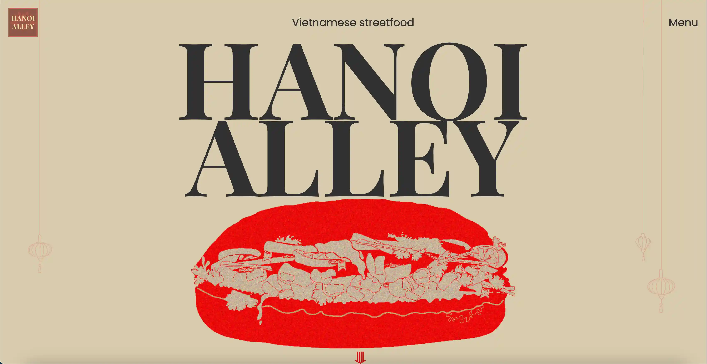

TEMA 5
VIRKSOMHEDSSITE

I tema 5 startede vi med en miniopgave, hvor vi skulle udvikle et passionssite. Her lærte jeg det grundlæggende inden for Premiere Pro, After Effects og GitHub, samtidig med at jeg fik en
introduktion til videoproduktion. Desværre var jeg syg, da selve siden skulle kodes, hvilket resulterede i, at jeg ikke nåede frem til et færdigt produkt.
Efterfølgende arbejdede vi på temaets hovedopgave, som var at redesigne en virksomheds hjemmeside. Vores gruppe valgte den vietnamesiske restaurant Hanoi Alley som case. Undervejs lærte vi
at bruge værktøjer som GitHub og Trello Board til at organisere vores arbejde. Jeg fik også værdifuld indsigt i samarbejdet mellem en kunde og en multimediedesigner, hvilket gav mig en
realistisk forberedelse på arbejdsprocesserne i den professionelle verden.
Klik på billedet for at få adgang til projektet!